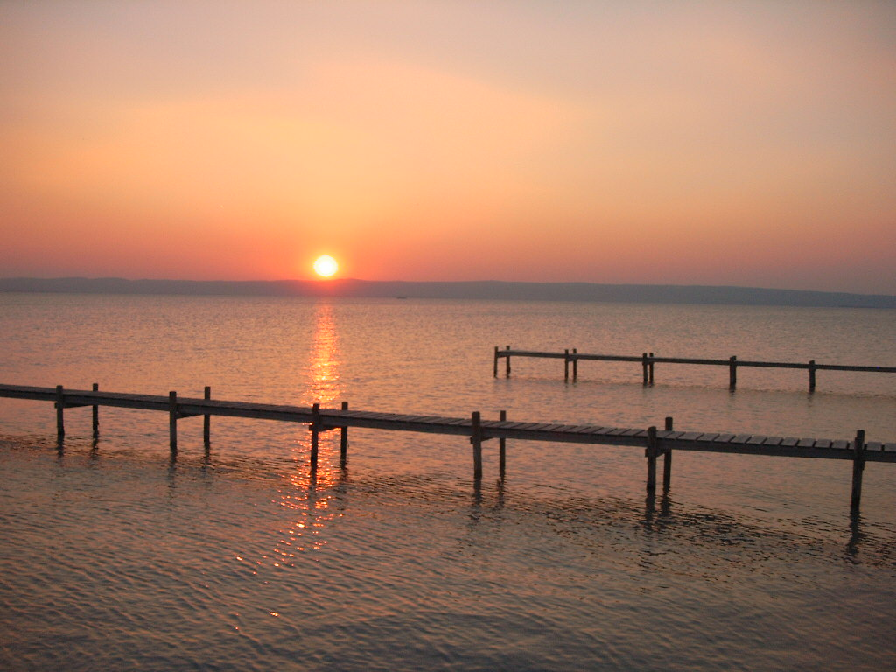

Natura 2000-Gebiete - Wo Europa am schönsten ist
Eine Auswahl aus der Vielfalt der österreichischen Ökosysteme

Laliderer Wand, Karwendel (Tirol)

Lainzer Tiergarten (Wien)

Verwall (Tirol/Vorarlberg)

Neusiedler See (Burgenland)

Drautal bei Ruden (Kärnten)

Wachau (Niederösterreich)

Millstätter See (Kärnten)

Ötztaler Alpen (Tirol)
This example use media queries to re-arrange the images on different screen sizes: for screens larger than 700px wide, it will show four images side by side, for screens smaller than 700px, it will show two images side by side. For screens smaller than 500px, the images will stack vertically (100%).
You will learn more about media queries and responsive web design later in our CSS Tutorial.